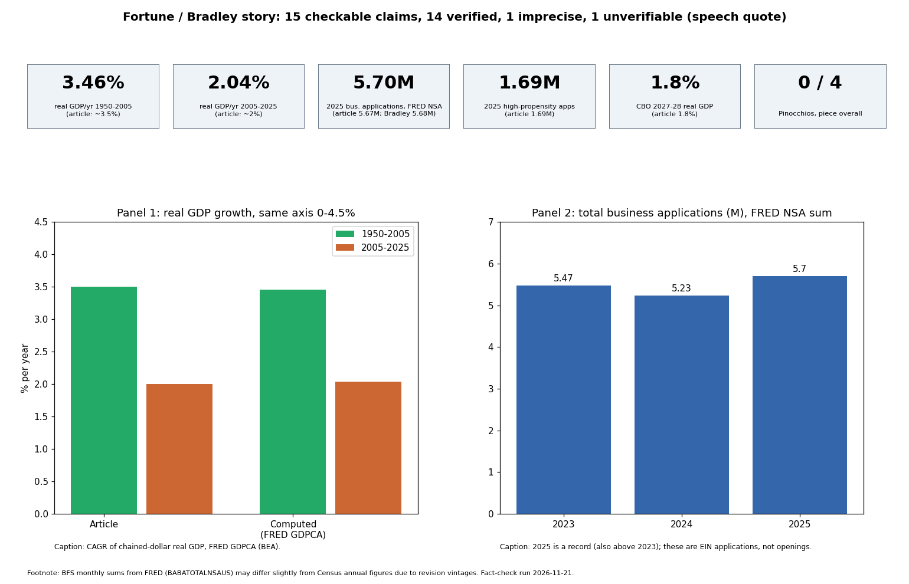

Nearly every checkable figure matches primary data. Real GDP grew 3.46%/yr 1950-2005 and 2.04%/yr 2005-2025 (article: about 3.5% and 2%). Chetty et al. report mobility falling from about 90% to 50%. CBO projects 1.8% growth for 2027-28. The piece also corrects Bradley's own "5.68 million new business starts" by explaining the number counts EIN applications.
What would change this: a Census annual table showing a 2025 count other than about 5.67M, or a transcript contradicting the quotes.
| Claim | Result | Source |
|---|---|---|
| GDP ~3.5%/yr 1950-2005, ~2%/yr 2005-2025 | Verified: 3.46%, 2.04% | FRED GDPCA |
| Doubling in ~23 vs ~35 years | Verified (rule of 70) | arithmetic |
| Mobility 90% to 50%; more than 70% of decline reversible by distribution | Verified | NBER w22910; Science 2017 |
| Trump 10% one-year cap call, January | Verified (Jan 9, 2026) | NPR, PBS |
| Sanders-Hawley bill | Exists; five-year, not one-year | sanders.senate.gov |
| Senate NDAA buyback/dividend limits | Verified (S. 4784 sec. 815); House has none | Mayer Brown, Holland & Knight |
| 11 elections since 2006, power flipped every time except 2012 | Verified from known results; count 2006-2026 is 11 | public election record |
| 5.67M applications 2025, a record | Verified approx. (5.70M by FRED sum) | Census BFS via FRED |
| 1.69M high-propensity 2025, 1.86M in 2023, lower two years running | Substantially verified: 1.69M, 1.83M (NSA), 1.70M in 2024 | FRED BAHBATOTALNSAUS |
| 9 in 10 voters: cost of living crucial or major | Verified; AP also reports about half "crucial" | AP Voter Poll |
| CBO 1.8% for 2027 and 2028 | Verified | CBO Jan/Feb 2026 |
| Bradley's spoken quotes | Not checkable here | none |